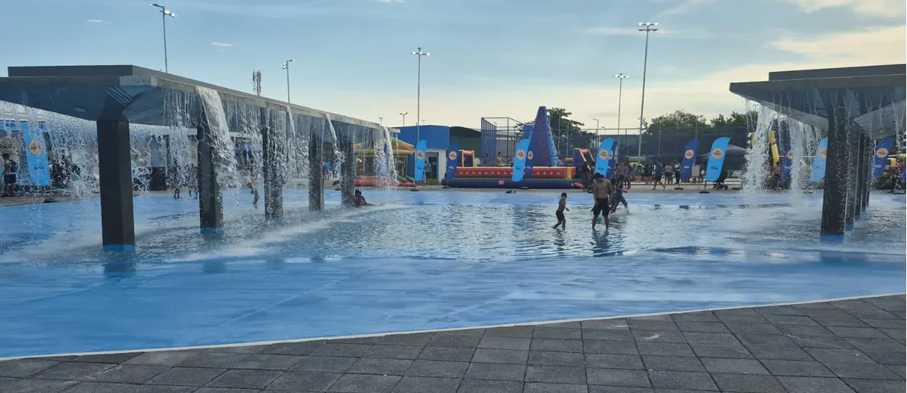

Sistemas aquáticos · Rio de Janeiro
Filtração e tratamento de água para piscinas
A Stagnum atua na instalação de sistemas de filtração e tratamento de água para piscinas e espaços de lazer, considerando as necessidades técnicas de cada empreendimento.
Conversar com a equipe pelo WhatsAppO que faz parte da solução?
Os serviços podem envolver circulação e filtração da água, integração de equipamentos, sistemas de tratamento e componentes hidráulicos associados à piscina. O dimensionamento e o escopo são definidos conforme as características do projeto.
Experiência em empreendimentos
O portfólio fornecido pela Stagnum registra atuação em sistemas de filtração no Parque São Gonçalo - RJ, em empreendimentos residenciais e na Bodytech Iguatemi Campinas, onde também foram informados serviços de iluminação e climatização.

Ver outras obras e registros fotográficos
Perguntas frequentes
O serviço contempla piscinas residenciais e de empreendimentos?
O portfólio da Stagnum inclui projetos residenciais e áreas de lazer de empreendimentos. A viabilidade e o escopo de cada atendimento devem ser confirmados com a equipe.
A Stagnum também trabalha com tratamento de água?
Sim. Filtração e tratamento de água de piscinas estão relacionados entre os serviços apresentados pela empresa.
Como solicitar avaliação de um projeto?
Envie informações sobre o espaço e a necessidade pelo WhatsApp (21) 99854-3141.